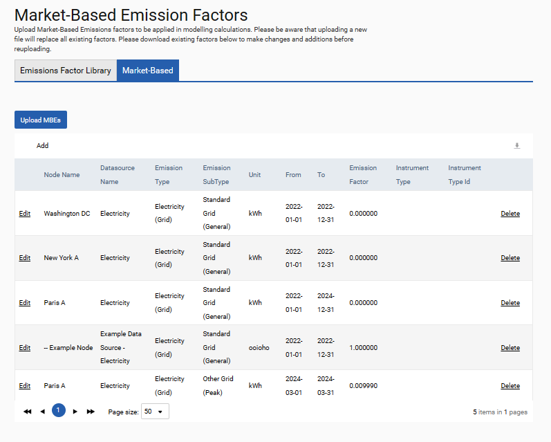
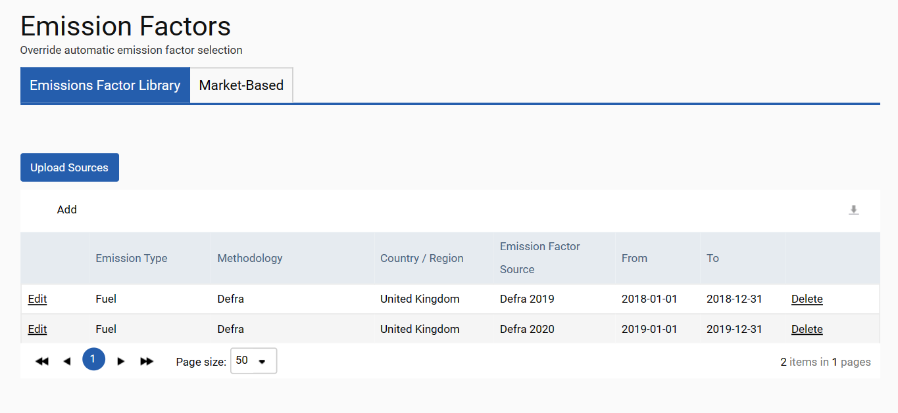

Three tabs are available under Environment > Settings > Customisation > Emission Factors: the Market-Based tab, the Emission Factors Library tab, and the FERA tab.
In the Market-Based tab the market-based emission factors for any consumption type can be defined. The emission factors on this page are used as first priority in all market-based emission calculations. Emission factors in tCO2e/Unit can be defined at the data source level for a given consumption category, sub-category, unit and time frame.
To add an individual row, use the Add button. Alternatively, emission factors can be uploaded in bulk using the Upload MBEs button. Uploading using this button will overwrite the contents of the table. Therefore, users might want to download the contents of the table using the Download button at the top right, make the necessary adjustments to the download and subsequently re-upload the document.
Once uploaded, these emission factors will be used in all associated calculations in the future. Historical data must be reprocessed to make use of newly uploaded factors.

As standard, SPM allocates emission factors according to the from and to dates of data uploaded to the platform. However, the Emission Factors Library tab allows users to override the automatic allocation of emission factors source by date.
For example, the Defra 2018 methodology is typically applied to any data from 2018. However, in the table below, the user has specified that for fuel data sources which use the Defra methodology and that have a Country/Region of United Kingdom, any uploads between 2018/01/01 and 2018/12/31 should use emission factors from Defra 2019. Similarly, they have specified that for the same data sources, any uploads within 2019 should use emission factors from the Defra 2020 methodology.

The FERA tab can be used to set gap-fill rules for FERA emission factors. To set a rule, the user would select a data type (for example, Electricity (Grid)) from the drop-down menu at the top left, then specify that any uploads made to such data sources with emission factors of a particular methodology (for example, CGGI) and country (for example, Canada) will be gap-filled using emission factors of an alternate methodology (for example, GHG) and alternate country (for example, United States). Such rules can be set for Electricity (Grid), Fuel, Heat (Grid) and Road Transport data sources. Note: Rules for transport data containing fuel data are assigned independently from rules for uploads with only distance data.
There are some instances where a one-to-one mapping of one methodology and country to another methodology and country is not possible. For example, for fuel, the EPA methodology publishes emission factors for burning peat, but the Defra methodology does not, so a mapping of such would fail. To support that type of scenario, the tab provides subgrid functionality with which you can specify additional mapping for a data type. For example, you can specify that for any uploads of peat to EPA data sources where the country is United States, you want the biodiesel fuel type used instead. So with a mapping like that, if peat is uploaded to an EPA data source for country United States, the system would instead use the emission factors for biodiesel fuel from perhaps Defra for country United Kingdom.
If using the subgrid functionality, different types of data will require different parameters set. Fuel data, for example, will need mapping for fuel types. For travel data (road business data), vehicle category and sub-category would be required. The mapping you build will depend on the type of data for which you are building it.